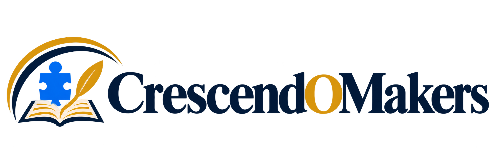
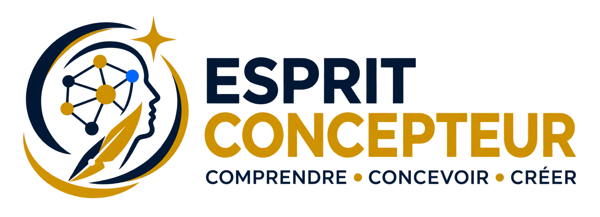

Clarté
Décrire ce qui se passe, ce que tu attendais et ce qui te manque pour commencer.

Esprit ConcepteurModule 1

Développement informatique · Débutants et faux débutants
Tu comprends quand on te guide, mais tu bloques lorsqu’il faut avancer seul ?
Le Module 1 te fait pratiquer comment décomposer une situation, représenter un problème et cadrer une idée pour mieux aborder tes difficultés de programmation — sans se limiter à reproduire du code.
Autonome · paiement unique · accès personnel à vie, tant que l’offre est exploitée ou que son accès est assuré.
Autonome · paiement unique · accès personnel à vie, tant que l’offre est exploitée ou que son accès est assuré.
Tu relis, tu cherches un autre exemple, tu essaies une correction… sans toujours savoir ce qu’il faudrait regarder en premier. Le problème n’est pas nécessairement ta motivation ou ta capacité à apprendre.
Le passage décisif se situe entre « je vois comment cela fonctionne » et « je sais par où commencer lorsque personne ne me montre le chemin ».
Illustration fictive du cheminement proposé, pas un témoignage ni un résultat garanti.
Décrire ce qui se passe, ce que tu attendais et ce qui te manque pour commencer.
Découper une situation simple en étapes que tu peux examiner, sans attendre un exemple identique.
Pouvoir expliquer pourquoi tu essaies une piste, puis regarder ce que cet essai t’apprend.
Donner un premier contour à ton idée : ce qu’elle doit permettre et les points à préciser avant de construire.
Plutôt que changer plusieurs choses à la fois, tu apprends à rendre ton essai plus précis. Voici ce que cela peut changer dans ta manière d’aborder une difficulté.
Illustration fictive
Exemple fictif créé pour cette présentation, distinct des exercices du cours. Il illustre un changement de raisonnement, sans constituer un résultat d’apprenant ni promettre la résolution de tous les bugs.
Une expérience issue du terrain
Plus de dix ans d’expérience en développement logiciel et une expérience d’encadrement pédagogique à l’ETNA, à Paris, nourrissent la conception d’Esprit Concepteur.
Son activité professionnelle porte notamment sur le développement logiciel, l’architecture applicative et la formation.
J’ai moi aussi repris des études et construit mes premiers projets. Mon ancien blog en garde la trace : découvrir mon parcours d’étudiant et mes projets (archive 2012–2013). Ces publications racontent une étape de mon parcours, pas des conseils techniques actualisés.
Tu ne viens pas seulement regarder quelqu’un faire. Tu essaies, tu compares ton approche à des exemples de résolution, puis tu reprends ton travail.
Ton travail : une description précise de la situation et de ce qui te manque pour avancer.
Ton travail : une suite d’étapes explicites que tu peux relire et examiner.
Ton travail : une représentation simple des éléments et de leurs relations, que tu peux expliquer.
Ton travail : un premier cadrage de ce que ton idée doit permettre et des points à clarifier.
Certaines activités partent d’actions de la vie quotidienne. Tu peux t’appuyer sur ce terrain familier pour faire le rapprochement avec une difficulté de conception : décomposer, représenter et préciser avant de construire.
C’est un entraînement à réutiliser ces repères, pas la promesse qu’un exercice quotidien suffira à résoudre un bug logiciel.
Ces premières fondations se pratiquent en autonomie, avec des vidéos ciblées, des documents, des exercices et des exemples de résolution. Ce n’est pas un cours complet de débogage ni la correction de ton projet personnel.
Tu peux proposer des remarques sur les cours et contribuer à leur amélioration, sans obligation de participer pour suivre ou terminer le Module 1.
Après avoir terminé le Module 1 et après sélection, tu peux devenir mentor bénévole pour ses nouveaux apprenants.
Aider quelqu’un à réfléchir, reformuler une difficulté ou expliquer un raisonnement est aussi une occasion de consolider tes propres repères. Ces échanges peuvent t’aider à gagner en aisance dans tes explications et à prendre davantage confiance dans ce que tu sais mobiliser.
Ce rôle reste facultatif et non automatique. Tu peux suivre et terminer le Module 1 sans devenir mentor.
Ce rôle n’est pas automatique : la sélection tient compte de la maîtrise, du comportement, des disponibilités et des besoins.
La création d’un espace communautaire est prévue comme bonus gratuit et facultatif, sur une plateforme communautaire ou un forum, pour l’entraide entre participants. Tu recevras ses modalités d’accès lorsqu’il sera ouvert ; le Module 1 peut être suivi et terminé indépendamment de cet espace.
L’objectif est de l’ouvrir après la première semaine du lancement, sous réserve des contraintes techniques : aucune date ferme n’est encore annoncée. La plateforme et les modalités peuvent évoluer. Mes interventions y seront ponctuelles, sans suivi régulier ni réponse individuelle garantie.
Un parcours pour construire tes premiers repères, pas seulement ajouter des vidéos à regarder.
Les formats peuvent évoluer. Les autres modules, le coaching régulier et la correction d’un projet externe ne sont pas inclus.
Ces délais sont communs à tous : ils ne repartent pas à chaque achat. Tu avances à ton rythme dans les ressources disponibles.
Tu peux nous écrire après avoir essayé une activité publiée. Lorsque l’examen de ta demande le justifie, une aide ponctuelle de vingt minutes peut être proposée, au maximum une fois par apprenant : ce n’est pas une séance incluse automatiquement.
Cette aide concerne une activité du Module 1 déjà publiée et essayée. Elle reste possible sans communauté ouverte. Elle ne comprend ni suivi régulier ni débogage d’un projet externe, ne garantit pas un résultat et ne limite aucun droit légal.
Ton achat ouvre un crédit personnel vers la formation complète, lorsqu’elle sera disponible.
Prix de lancement · 60 jours
Esprit Concepteur — Module 1 autonomeTVA non applicable, art. 293 B du CGI
Paiement unique · sans abonnement ni reconduction automatique.
Les autres modules et l’accompagnement individuel régulier ne sont pas inclus. La formation complète est en préparation.
Contenus publiés progressivement : bienvenue et introduction à l’ouverture, premier cours sous cinq jours calendaires, puis le même délai maximal après chaque publication. Exercices avec leur cours. Détail de la publication.
Je commence le Module 1Aperçu inactif · 60 jours restants pour bénéficier du prix de lancementCommande de démonstration : aucun paiement réel.
La formation complète avec accompagnement est en préparation. Le parcours prévu intégrera le Module 1 avec accompagnement dès cette première étape. Tu peux commencer par le Module 1 autonome et envisager la suite lorsqu’elle sera disponible.
Ses modalités et ses conditions seront présentées avant toute commande. Tu n’as pas à t’engager aujourd’hui dans l’ensemble du parcours.
Recevoir les informations sur la formation complète
Tu pratiques comment décrire une difficulté, décomposer une situation simple et expliquer la vérification que tu choisis. Ces repères peuvent t’aider quand tu ne sais pas par où commencer, même si la demande est claire. Le Module 1 n’est pas un cours complet de débogage et ne prévoit pas la correction de ton projet personnel.
Cela demande de pratiquer : le module ne garantit ni emploi, ni niveau professionnel, ni résolution de tous les bugs.
Des conseils gratuits ou un tutoriel peuvent déjà t’aider. Mais si tu comprends la solution sans savoir la retrouver seul dans une autre situation, accumuler davantage d’explications ne répond pas forcément à ton blocage.
Ici, tu suis une progression organisée : tu essaies sur une situation concrète, tu compares ton approche à un exemple de résolution, puis tu reprends ton raisonnement. Ce que tu achètes, c’est ce parcours de pratique et ses supports, pas la promesse d’une information introuvable ailleurs.
Le but est de commencer à réutiliser tes repères quand l’exemple ne suffit plus. Cela demande de pratiquer : la progression dépend de ta pratique et aucun résultat n’est garanti.
Oui. C’est une première étape autonome, proposée séparément. Le module introduit les premières fondations d’Esprit Concepteur ; les autres modules et l’accompagnement individuel régulier ne sont pas inclus. La formation complète est en préparation.
Le Module 1 n’exige pas la maîtrise préalable d’un langage ni d’être particulièrement bon en maths. Il faut surtout être prêt à réfléchir et à pratiquer progressivement. La formation ne délivre ni diplôme ni certification.
Tu expérimentes des situations concrètes, puis tu confrontes ton approche à des exemples de résolution. Des vidéos ciblées et des documents de travail accompagnent cette pratique. La progression d’apprentissage est indicative : environ quatre semaines, avec un repère moyen de 2 à 5 heures par semaine, variable selon ton rythme. Ce n’est ni un minimum ni un maximum imposé, ni une garantie de durée ou de résultat. Elle est distincte du calendrier de publication des ressources, qui peuvent être améliorées.
Oui. Prévois en moyenne 2 à 5 heures par semaine, selon tes disponibilités et ton rythme. Ce repère n’est pas une obligation hebdomadaire. Tu peux avancer plus lentement ou plus rapidement, dans les contenus disponibles.
L’accès est personnel et sans date de fin prédéterminée, tant que le professionnel exerçant sous la marque CrescendoMakers, ou son successeur juridique, exploite l’offre ou en assure l’accès. Il inclut les mises à jour effectivement publiées pendant cette durée. Le compte et les identifiants ne sont pas partageables.
La date d’ouverture est communiquée avant commande. Selon cette date et ton choix concernant l’accès anticipé, l’accès est ouvert après confirmation du paiement et recueil des consentements requis, ou après le délai légal de rétractation.
Bienvenue et introduction sont disponibles à l’ouverture ; le premier cours après l’introduction paraît au plus tard cinq jours calendaires après l’ouverture des ventes, puis chaque cours suivant au plus tard cinq jours calendaires après le précédent, avec ses exercices associés. Ces délais ne repartent pas à chaque achat. Voir le détail de la publication progressive.
Ton retour compte. Si une activité te bloque ou si le parcours ne répond pas à tes attentes, écris à contact@crescendomakers.net en indiquant ta commande, l’activité du Module 1 déjà publiée et essayée, ce que tu as tenté et ce qui te bloque. Ta demande sera examinée. Lorsque la difficulté le justifie, une aide individuelle ponctuelle de vingt minutes peut être proposée, au maximum une fois par apprenant, pour clarifier le blocage et identifier une prochaine étape sur cette activité.
Il ne s’agit ni d’un rendez-vous automatique pour chacun, ni d’un suivi régulier, ni d’un débogage de projet externe. Tu peux demander cette aide même si la communauté n’est pas ouverte. Elle ne remplace ni ne limite tes droits légaux de rétractation, de mise en conformité ou de remboursement ; elle ne garantit pas un résultat.
Non. Cela signifie notamment mieux repérer ta difficulté, expliquer ce que tu as essayé et demander une aide plus précise. Tu gardes une part active dans le raisonnement au lieu d’attendre uniquement une solution à reproduire.
Oui. Le parcours aide à mieux formuler ce que tu cherches, garder un regard critique et reprendre la main lorsque la réponse de l’outil ne suffit plus.
Oui, lorsqu’elle sera disponible. Ton achat ouvre un crédit personnel, détaillé dans l’offre. Pour les fondateurs, sa valeur correspond pendant 36 mois au prix public normal du Module 1 lors du passage ; ensuite, le crédit demeure égal au montant payé. Demande son application avant la nouvelle commande.
Oui. La création de cet espace d’entraide est prévue ; il n’est pas encore annoncé comme disponible. L’objectif d’ouverture après la première semaine du lancement dépend des contraintes techniques et n’est pas une date contractuelle. Tu recevras les modalités lors de l’ouverture. L’espace restera facultatif, sur une plateforme communautaire ou un forum remplaçable. J’envisage d’y intervenir ponctuellement, sans fréquence ni réponse individuelle garantie. Tu peux suivre et terminer le Module 1 sans y participer.
Tu n’as pas besoin de connaître tout le chemin pour commencer. Le Module 1 te propose d’en travailler les premières fondations, à ton rythme et sans abonnement.
Parcours de démonstration uniquement : aucune commande ni transaction réelle.